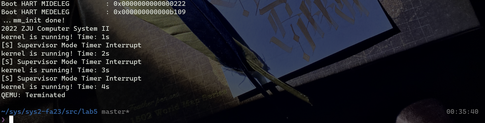
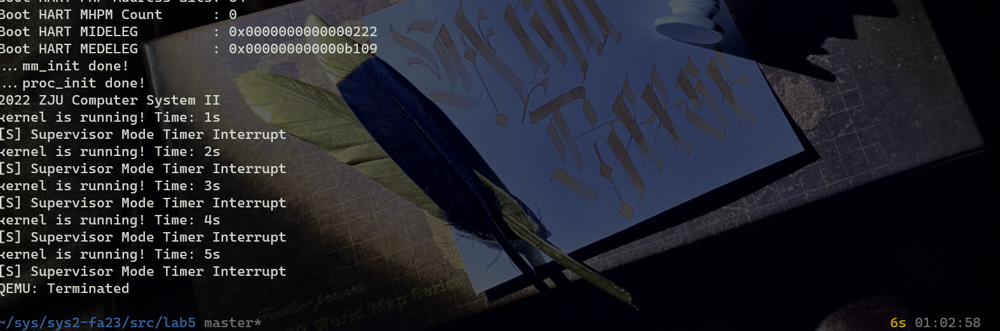
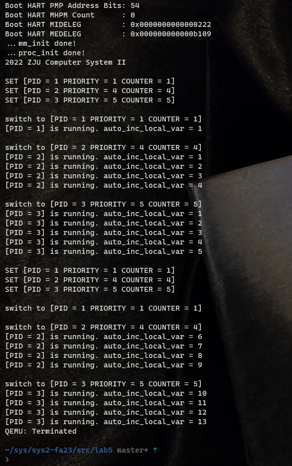
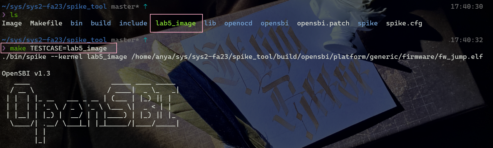
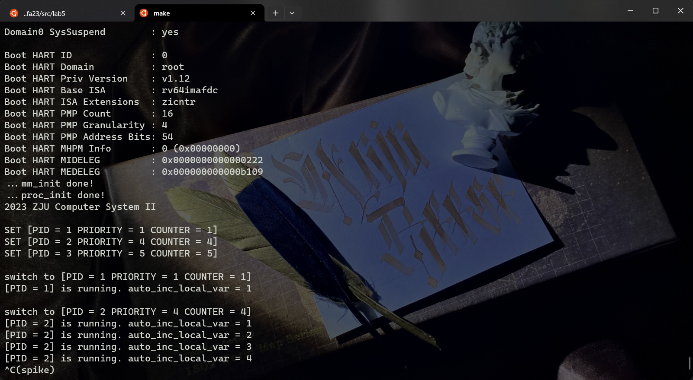
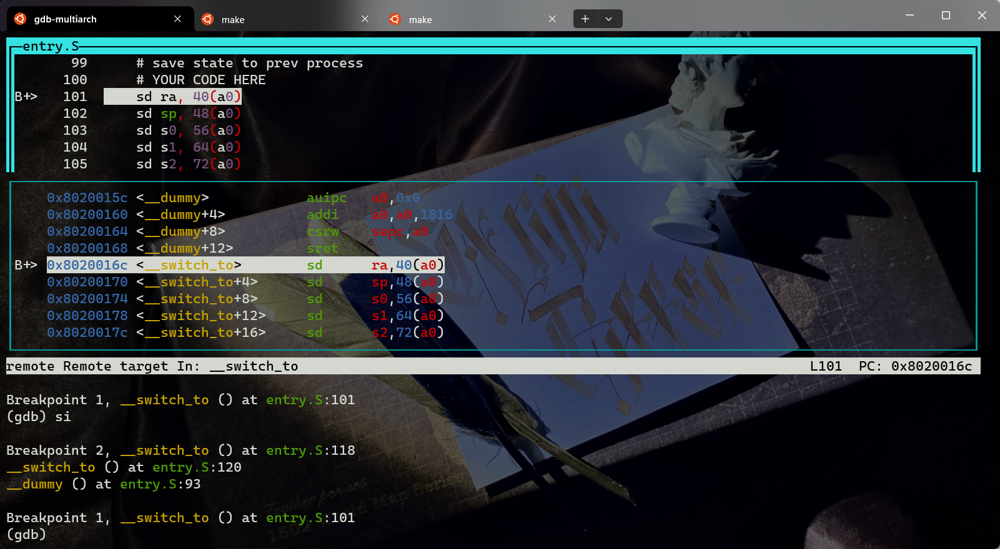
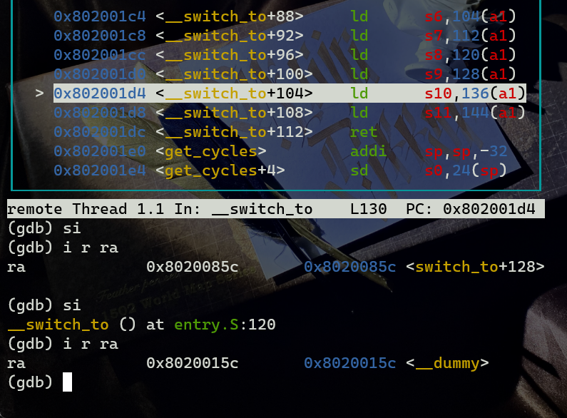
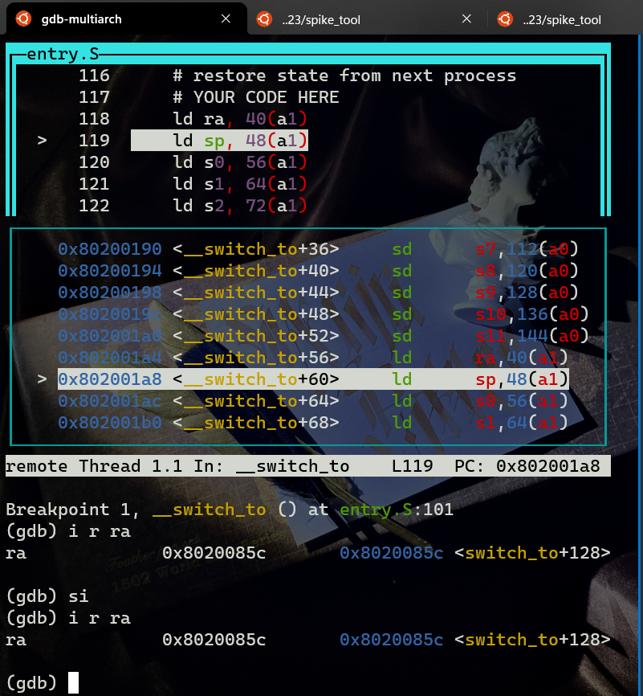

Lab5: RV64 内核线程调度¶
1 实验目的¶
- 了解线程概念，并学习线程相关结构体，并实现线程的初始化功能
- 了解如何使用时钟中断来实现线程的调度
- 了解线程切换原理，并实现线程的切换
- 掌握简单的线程调度算法，并完成一种简单调度算法的实现
2 实验环境¶
- Ubuntu 22.04
2.1 实验步骤¶
2.2 准备工程¶
- 从 lab4 和 repo 同步代码，修改
def.h，确认工程可以正常运行

.
├── Makefile
├── arch
│ └── riscv
│ ├── Makefile
│ ├── include
│ │ ├── clock.h
│ │ ├── defs.h
│ │ ├── mm.h
│ │ ├── proc.h
│ │ └── sbi.h
│ └── kernel
│ ├── Makefile
│ ├── clock.c
│ ├── entry.S
│ ├── head.S
│ ├── mm.c
│ ├── proc.c
│ ├── sbi.c
│ ├── trap.c
│ └── vmlinux.lds
├── include
│ ├── printk.h
│ ├── rand.h
│ ├── stddef.h
│ ├── string.h
│ └── types.h
├── init
│ ├── Makefile
│ ├── main.c
│ └── test.c
└── lib
├── Makefile
├── printk.c
├── rand.c
└── string.c
2.3 proc.h 数据结构定义¶
2.4 线程调度功能实现¶
2.4.1 线程初始化¶
- 当我们的 OS run 起来时候，其本身就是一个线程
idle 线程，但是我们并没有为它设计好task_struct。所以第一步我们要为idle设置task_struct。并将current,task[0]都指向idle。
idle = (PtrToTaskStruct)kalloc(); /* Initialize idle as first task */
idle->state = TASK_RUNNING; /* #define TASK_RUNNING 0 为了简化实验，所有的线程都只有一种状态 */
idle->pid = 0;
idle->counter = 0;
idle->priority = 0;
task[0] = idle;
current = idle;
- 为了方便起见，我们将
task[1]~task[NR_TASKS - 1], 全部初始化， 这里和idle设置的区别在于要为这些线程设置thread_struct中的ra和sp.
for (int i = 1; i < NR_TASKS; i++) {
PtrToTaskStruct tasks = (PtrToTaskStruct)kalloc();
tasks->state = TASK_RUNNING;
tasks->pid = i;
tasks->counter = 0;
tasks->priority = 0;
tasks->thread.ra = (uint64)dummy;
tasks->thread.sp = (uint64)tasks + PGSIZE;
task[i] = tasks;
}
- 在
_start适当的位置调用task_init
```arm-asm/ _start: # MY CODE HERE la sp, _stack_top
call mm_init
call task_init
```
2.4.2 __dummy 与 dummy¶
- 在
proc.c添加dummy() - 在
entry.S添加__dummy- 在
__dummy中将 sepc 设置为dummy()的地址，并使用sret从中断中返回。 __dummy与_traps的restore部分相比，其实就是省略了从栈上恢复上下文的过程（但是手动设置了sepc）。arm-asm .global __dummy __dummy: la a0, dummy csrw sepc, a0 ret
- 在
运行，可以实现两个 init 操作（这里还没有修改 test.c）

2.4.3 实现线程切换¶
2.4.3.1 switch_to()¶
- 保存当前线程的上下文
- 将 current 指向 next
- 恢复 next 的上下文
- 返回
/* 线程切换入口函数*/
void switch_to(struct task_struct* next) {
if (next == current) {
return ;
}
printk("\nswitch to [PID = %d PRIORITY = %d COUNTER = %d]\n", next->pid, next->priority, next->counter);
PtrToTaskStruct prev = current;
current = next;
__switch_to(prev, next);
return ;
}
2.4.3.2 __switch_to¶
.global __switch_to
__switch_to:
# save state to prev process
# YOUR CODE HERE
sd ra, 40(a0)
sd sp, 48(a0)
sd s0, 56(a0)
sd s1, 64(a0)
sd s2, 72(a0)
sd s3, 80(a0)
sd s4, 88(a0)
sd s5, 96(a0)
sd s6, 104(a0)
sd s7, 112(a0)
sd s8, 120(a0)
sd s9, 128(a0)
sd s10, 136(a0)
sd s11, 144(a0)
# restore state from next process
# YOUR CODE HERE
ld ra, 40(a1)
ld sp, 48(a1)
ld s0, 56(a1)
ld s1, 64(a1)
ld s2, 72(a1)
ld s3, 80(a1)
ld s4, 88(a1)
ld s5, 96(a1)
ld s6, 104(a1)
ld s7, 112(a1)
ld s8, 120(a1)
ld s9, 128(a1)
ld s10, 136(a1)
ld s11, 144(a1)
ret
2.5 实现调度入口函数¶
- 将当前进程的counter--，如果结果大于零则直接返回
- 否则进行进程调度
由于我设置的 counter 的值是 unsigned，-1 会被判断成最大的 64 位正整数而大于 0，所以判断了两次 counter 是否等于 0
void do_timer() {
// printk("do_timer\n");
if (current == idle) {
schedule();
} else {
if (current->counter == 0) {
schedule();
return ;
}
current->counter--;
if (current->counter == 0) {
schedule();
}
}
return ;
}
2.6 schedule()¶
2.6.1 参考 Linux v0.11 调度算法实现：¶
- 首先，代码通过循环遍历所有的任务（
task_struct结构体的指针数组），检查是否存在满足条件的任务需要唤醒。具体来说，它检查每个任务的闹钟（alarm）是否已经过期，如果过期，则将对应任务的信号位中的 SIGALRM 位置为1，同时将闹钟重置为0。然后，它检查是否有处于可中断状态（TASK_INTERRUPTIBLE）且收到信号的任务，如果有，则将任务的状态设置为 TASK_RUNNING，表示可以运行。 - 接下来是调度器的核心部分。使用一个无限循环，循环条件为
while (1)。- 在每次循环开始时，初始化变量
c为 -1，next为 0。c用于保存优先级最高的任务的计数器值，next用于保存将要切换到的任务的索引。 - 然后，通过遍历任务数组，找到优先级最高的处于运行状态（TASK_RUNNING）且计数器值最大的任务。如果找到了这样的任务，将其计数器值赋给
c，同时记录该任务的索引到next。 - 如果找到了满足条件的任务（
c不为0），则跳出循环。 - 如果没有找到满足条件的任务（
c为0），则进行下一步操作。
- 在每次循环开始时，初始化变量
- 如果没有找到满足条件的任务，则进入下一轮调度。此时，需要调整所有任务的计数器值。循环遍历所有任务，将每个任务的计数器值右移一位（相当于除以2），然后加上任务的优先级。这个操作会使得计数器值较低的任务获得更多的执行机会，以平衡任务的执行。
- 接下来，回到调度器的开头，重新开始循环，直到找到满足条件的任务。
- 最后，调用
switch_to函数，将控制权切换到下一个要执行的任务。
2.6.2 编写我的 schedule() 函数：¶
- 找到 counter 最小的，并且在运行的 task
- 设置下一个进程为 counter 最小的 task
- 如果找到了在运行的并且 counter 大于 0 的线程，切换到下一个线程，函数返回。
- 如果没有找到 counter > 0 的线程，将所有在运行的 task 的 counter 设置成它的 priority，输出每一个 running task 的 PID，counter，priority，输出设置信息，回到 1.
void schedule() {
PtrToTaskStruct next = idle;
while (1) {
uint64 min = 0x7fffffffffffffff;
int index = 0;
for (int i = 0; i < NR_TASKS; i++) { // find the minist running task
if (task[i]->counter != 0 && task[i]->state == TASK_RUNNING && task[i]->counter <= min) {
min = task[i]->counter;
index = i;
}
}
next = task[index];
if (next != idle) {
switch_to(next);
return ;
}
for (int i = 1; i < NR_TASKS; i++) {
if (task[i]->state == TASK_RUNNING) {
task[i]->counter = task[i]->priority;
if (i == 1) {
printk("\n");
}
printk("SET [PID = %d PRIORITY = %d COUNTER = %d]\n", task[i]->pid, task[i]->priority, task[i]->counter);
}
}
}
}
2.7 编译运行¶

2.8 Spike 记录¶
最开始一直没有显示结果， ctrl+c 打断后按回车可以看见汇编指令在运行，说明不是程序的问题。由于 spike 初始化了很长一段时间所以将 mm.c 文件中的 mmset 注释掉，可以顺利显示结果。


3 思考题¶
-
在 RV6 4 中一 共用 32 个通用寄存器， 为什么
context_switch中只保 存了 14 个？ 由于__switch_to函数是在 C 语言的switch_to函数中调用的，因此__switch_to只需要保存 C 语言没有保存的 Callee 部分（包括栈指针 sp 和寄存器 s0~s11）以及返回地址寄存器 ra，总共需要保存 14 个寄存器。这是因为在 RISC-V 标准中，Caller 部分的寄存器保存在栈上。 -
当线程第一次调用时， 其
ra所代表的返回点是__dummy。那么在之后的线程调用中context_switch中，ra保存 / 恢复的函数返回点是什么呢 ？ 请同学用 gdb 尝试追踪一次完整的线程切换流程，并关注每一次ra的变换。
在 __switch_to 和 switch_to 打断点

保存的 ra 为 switch_to + 128，恢复的 ra 为 __dummy

运行三次后，发现保存和恢复的 ra 都变成了 switch_to + 128

由于前三次线程切换时，被切换的线程都是第一次被调度，因此它们没有需要恢复的上下文，所以返回地址寄存器 ra 的值被初始化为 __dummy。这样，在每次线程切换时，保存的返回地址值就是前一次调用 switch_to 函数时存储的下一条指令地址。而在之后的线程切换中，所有线程都已经有了保存的上下文，因此恢复的返回地址都是 switch_to + 128。这种处理方式确保了线程切换的正确性和一致性。